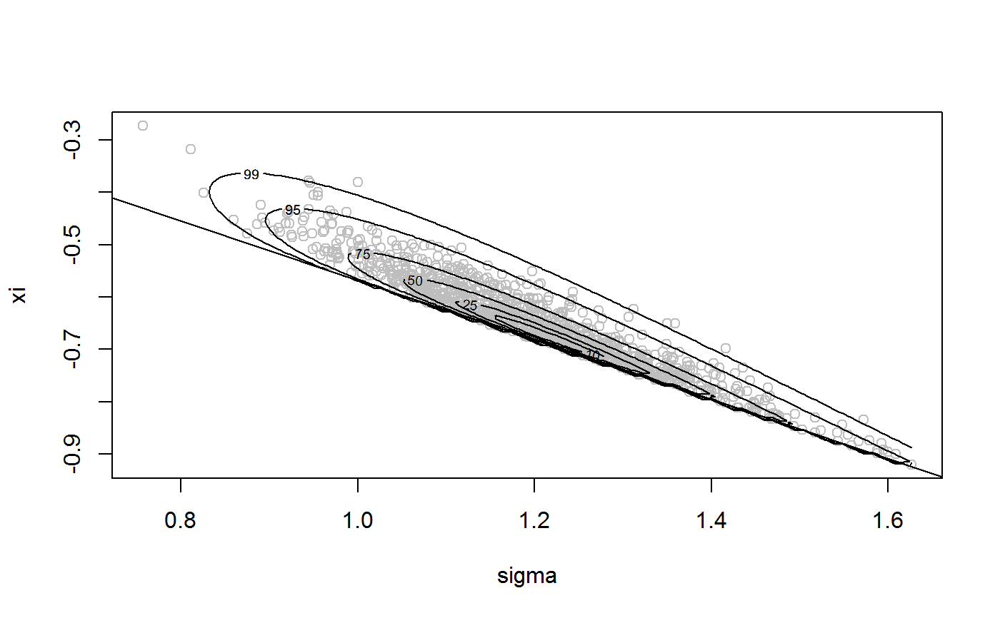
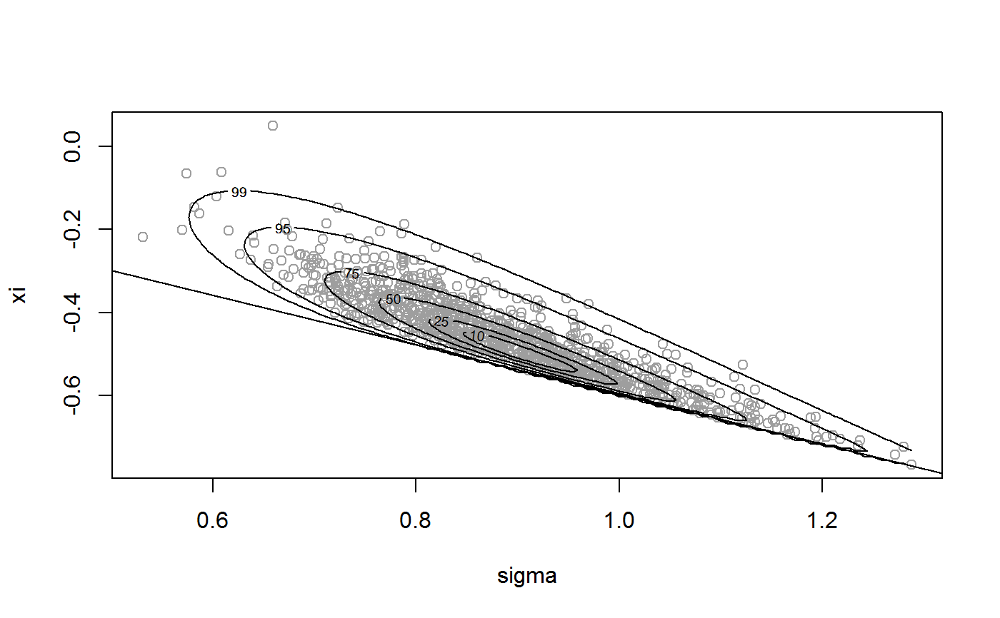
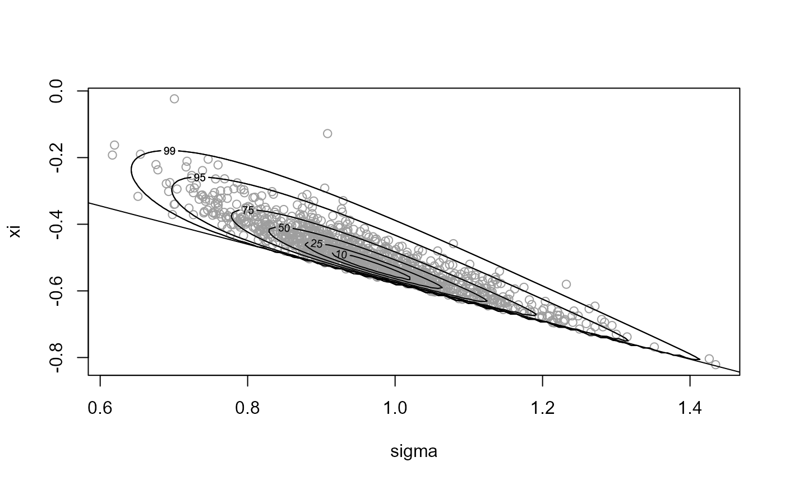
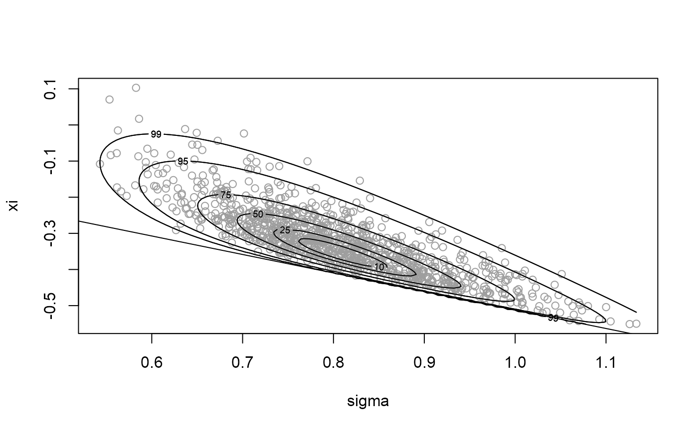
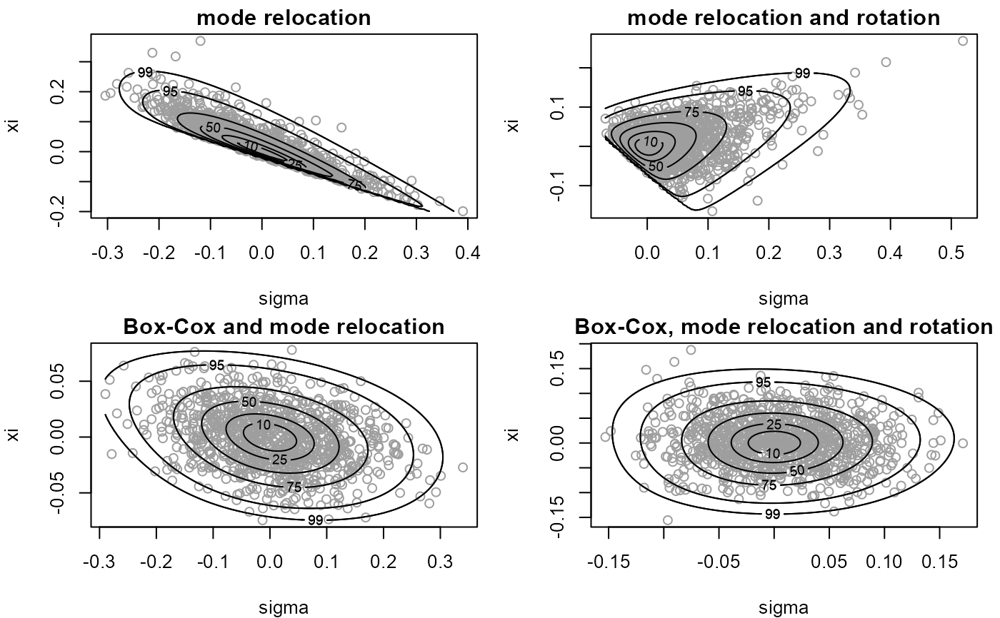

R/box_cox_functions_rcpp.R
find_lambda_rcpp.RdFinds a value of the Box-Cox transformation parameter lambda for which the (positive) random variable with log-density logf has a density closer to that of a Gaussian random variable. In the following we use theta to denote the argument of logf on the original scale and phi on the Box-Cox transformed scale.
find_lambda_rcpp( logf, ..., d = 1, n_grid = NULL, ep_bc = 1e-04, min_phi = rep(ep_bc, d), max_phi = rep(10, d), which_lam = 1:d, lambda_range = c(-3, 3), init_lambda = NULL, phi_to_theta = NULL, log_j = NULL, user_args = list() )
| logf | A pointer to a compiled C++ function returning the log of the target density \(f\). |
|---|---|
| ... | further arguments to be passed to |
| d | A numeric scalar. Dimension of f. |
| n_grid | A numeric scalar. Number of ordinates for each variable in phi. If this is not supplied a default value of ceiling(2501 ^ (1 / d)) is used. |
| ep_bc | A (positive) numeric scalar. Smallest possible value of phi to consider. Used to avoid negative values of phi. |
| min_phi, max_phi | Numeric vectors. Smallest and largest values of phi at which to evaluate logf, i.e. the range of values of phi over which to evaluate logf. Any components in min_phi that are not positive are set to ep_bc. |
| which_lam | A numeric vector. Contains the indices of the components of phi that ARE to be Box-Cox transformed. |
| lambda_range | A numeric vector of length 2. Range of lambda over which to optimise. |
| init_lambda | A numeric vector of length 1 or d. Initial value of
lambda used in the search for the best lambda. If |
| phi_to_theta | A pointer to a compiled C++ function returning
(the inverse) of the transformation from theta to phi used to ensure
positivity of phi prior to Box-Cox transformation. The argument is
phi and the returned value is theta. If |
| log_j | A pointer to a compiled C++ function returning the log of the Jacobian of the transformation from theta to phi, i.e. based on derivatives of phi with respect to theta. Takes theta as its argument. |
| user_args | A list of numeric components providing arguments to
the user-supplied functions |
A list containing the following components
A numeric vector. The value of lambda.
A numeric vector. Box-cox scaling parameter, estimated by the geometric mean of the values of phi used in the optimisation to find the value of lambda, weighted by the values of f evaluated at phi.
A numeric vector. An initial estimate of the mode of the Box-Cox transformed density
A numeric vector. Estimates of the marginal standard deviations of the Box-Cox transformed variables.
as detailed above (only if phi_to_theta is
supplied)
as detailed above (only if log_j is supplied)
as detailed above (only if user_args is supplied)
The general idea is to evaluate the density f on a d-dimensional
grid, with n_grid ordinates for each of the d variables.
We treat each combination of the variables in the grid as a data point
and perform an estimation of the Box-Cox transformation parameter
lambda, in which each data point is weighted by the density
at that point. The vectors min_phi and max_phi define the
limits of the grid and which_lam can be used to specify that only
certain components of phi are to be transformed.
Box, G. and Cox, D. R. (1964) An Analysis of Transformations. Journal of the Royal Statistical Society. Series B (Methodological), 26(2), 211-252.
Andrews, D. F. and Gnanadesikan, R. and Warner, J. L. (1971) Transformations of Multivariate Data, Biometrics, 27(4).
Eddelbuettel, D. and Francois, R. (2011). Rcpp: Seamless R and C++ Integration. Journal of Statistical Software, 40(8), 1-18. https://www.jstatsoft.org/v40/i08/.
Eddelbuettel, D. (2013). Seamless R and C++ Integration with Rcpp, Springer, New York. ISBN 978-1-4614-6867-7.
ru_rcpp to perform ratio-of-uniforms sampling.
find_lambda_one_d_rcpp to produce (somewhat)
automatically a list for the argument lambda of ru for the
d = 1 case.
# Log-normal density =================== # Note: the default value max_phi = 10 is OK here but this will not always # be the case ptr_lnorm <- create_xptr("logdlnorm") mu <- 0 sigma <- 1 lambda <- find_lambda_rcpp(logf = ptr_lnorm, mu = mu, sigma = sigma) lambda#> $lambda #> [1] 0.05408856 #> #> $gm #> [1] 0.971952 #> #> $init_psi #> [1] -0.05181524 #> #> $sd_psi #> Var1 #> 0.8614544 #> #> $user_args #> list() #>x <- ru_rcpp(logf = ptr_lnorm, mu = mu, sigma = sigma, d = 1, n = 1000, trans = "BC", lambda = lambda) # Gamma density =================== alpha <- 1 # Choose a sensible value of max_phi max_phi <- qgamma(0.999, shape = alpha) # [Of course, typically the quantile function won't be available. However, # In practice the value of lambda chosen is quite insensitive to the choice # of max_phi, provided that max_phi is not far too large or far too small.] ptr_gam <- create_xptr("logdgamma") lambda <- find_lambda_rcpp(logf = ptr_gam, alpha = alpha, max_phi = max_phi) lambda#> $lambda #> [1] 0.2801406 #> #> $gm #> [1] 0.5525366 #> #> $init_psi #> [1] -0.2060046 #> #> $sd_psi #> Var1 #> 0.573372 #> #> $user_args #> list() #>x <- ru_rcpp(logf = ptr_gam, alpha = alpha, d = 1, n = 1000, trans = "BC", lambda = lambda) # \donttest{ # Generalized Pareto posterior distribution =================== n <- 1000 # Sample data from a GP(sigma, xi) distribution gpd_data <- rgpd(m = 100, xi = -0.5, sigma = 1) # Calculate summary statistics for use in the log-likelihood ss <- gpd_sum_stats(gpd_data) # Calculate an initial estimate init <- c(mean(gpd_data), 0) n <- 1000 # Sample on original scale, with no rotation ---------------- ptr_gp <- create_xptr("loggp") for_ru_rcpp <- c(list(logf = ptr_gp, init = init, d = 2, n = n, lower = c(0, -Inf)), ss, rotate = FALSE) x1 <- do.call(ru_rcpp, for_ru_rcpp) plot(x1, xlab = "sigma", ylab = "xi")# Parameter constraint line xi > -sigma/max(data) # [This may not appear if the sample is far from the constraint.] abline(a = 0, b = -1 / ss$xm)summary(x1)#> ru bounding box: #> box vals1 vals2 conv #> a 1.0000000 0.0000000 0.0000000 0 #> b1minus -0.1366634 -0.2148084 0.1986321 0 #> b2minus -0.1184264 0.2655576 -0.1932687 0 #> b1plus 0.1648891 0.2868122 -0.2032960 0 #> b2plus 0.1447393 -0.2095940 0.2554156 0 #> #> estimated probability of acceptance: #> [1] 0.1635056 #> #> sample summary #> V1 V2 #> Min. :0.5008 Min. :-0.80645 #> 1st Qu.:0.8039 1st Qu.:-0.53251 #> Median :0.8865 Median :-0.46438 #> Mean :0.8905 Mean :-0.45756 #> 3rd Qu.:0.9696 3rd Qu.:-0.38948 #> Max. :1.3565 Max. :-0.03939# Sample on original scale, with rotation ---------------- for_ru_rcpp <- c(list(logf = ptr_gp, init = init, d = 2, n = n, lower = c(0, -Inf)), ss) x2 <- do.call(ru_rcpp, for_ru_rcpp) plot(x2, xlab = "sigma", ylab = "xi")summary(x2)#> ru bounding box: #> box vals1 vals2 conv #> a 1.00000000 0.00000000 0.00000000 0 #> b1minus -0.06491404 -0.09936675 0.02749827 0 #> b2minus -0.07270271 0.08233540 -0.11864887 0 #> b1plus 0.11638501 0.24619095 0.12003623 0 #> b2plus 0.08885635 0.12144488 0.15680121 0 #> #> estimated probability of acceptance: #> [1] 0.4416961 #> #> sample summary #> V1 V2 #> Min. :0.5310 Min. :-0.76570 #> 1st Qu.:0.8067 1st Qu.:-0.52827 #> Median :0.8796 Median :-0.45648 #> Mean :0.8868 Mean :-0.45535 #> 3rd Qu.:0.9575 3rd Qu.:-0.38710 #> Max. :1.2879 Max. : 0.04962# Sample on Box-Cox transformed scale ---------------- # Find initial estimates for phi = (phi1, phi2), # where phi1 = sigma # and phi2 = xi + sigma / max(x), # and ranges of phi1 and phi2 over over which to evaluate # the posterior to find a suitable value of lambda. temp <- do.call(gpd_init, ss) min_phi <- pmax(0, temp$init_phi - 2 * temp$se_phi) max_phi <- pmax(0, temp$init_phi + 2 * temp$se_phi) # Set phi_to_theta() that ensures positivity of phi # We use phi1 = sigma and phi2 = xi + sigma / max(data) # Create an external pointer to this C++ function ptr_phi_to_theta_gp <- create_phi_to_theta_xptr("gp") # Note: log_j is set to zero by default inside find_lambda_rcpp() lambda <- find_lambda_rcpp(logf = ptr_gp, ss = ss, d = 2, min_phi = min_phi, max_phi = max_phi, user_args = list(xm = ss$xm), phi_to_theta = ptr_phi_to_theta_gp) lambda#> $lambda #> [1] 0.1955879 0.4524698 #> #> $gm #> [1] 0.88139009 0.05558434 #> #> $init_psi #> [1] -0.1175793 -0.3262958 #> #> $sd_psi #> Var1 Var2 #> 0.10593629 0.03726044 #> #> $phi_to_theta #> <pointer: 0x00000000166d6580> #> #> $log_j #> <pointer: 0x00000000166d6600> #> #> $user_args #> $user_args$xm #> [1] 1.674712 #> #># Sample on Box-Cox transformed, without rotation x3 <- ru_rcpp(logf = ptr_gp, ss = ss, d = 2, n = n, trans = "BC", lambda = lambda, rotate = FALSE) plot(x3, xlab = "sigma", ylab = "xi")summary(x3)#> ru bounding box: #> box vals1 vals2 conv #> a 1.00000000 0.0000000 0.00000000 0 #> b1minus -0.14699944 -0.2436505 0.05671949 0 #> b2minus -0.05131768 0.1118800 -0.07913945 0 #> b1plus 0.14402134 0.2373468 -0.04200666 0 #> b2plus 0.05536588 -0.1391027 0.09176593 0 #> #> estimated probability of acceptance: #> [1] 0.4516712 #> #> sample summary #> V1 V2 #> Min. :0.5475 Min. :-0.81123 #> 1st Qu.:0.8105 1st Qu.:-0.52867 #> Median :0.8815 Median :-0.46143 #> Mean :0.8892 Mean :-0.45743 #> 3rd Qu.:0.9613 3rd Qu.:-0.38979 #> Max. :1.3666 Max. : 0.08857# Sample on Box-Cox transformed, with rotation x4 <- ru_rcpp(logf = ptr_gp, ss = ss, d = 2, n = n, trans = "BC", lambda = lambda) plot(x4, xlab = "sigma", ylab = "xi")summary(x4)#> ru bounding box: #> box vals1 vals2 conv #> a 1.00000000 0.0000000000 0.000000000 0 #> b1minus -0.07732752 -0.1250767041 0.011010952 0 #> b2minus -0.07577703 -0.0053428258 -0.116859374 0 #> b1plus 0.08518781 0.1445238315 0.008795646 0 #> b2plus 0.08175471 -0.0001517266 0.135503729 0 #> #> estimated probability of acceptance: #> [1] 0.5299417 #> #> sample summary #> V1 V2 #> Min. :0.5229 Min. :-0.80265 #> 1st Qu.:0.7928 1st Qu.:-0.52858 #> Median :0.8742 Median :-0.45096 #> Mean :0.8844 Mean :-0.44975 #> 3rd Qu.:0.9648 3rd Qu.:-0.37963 #> Max. :1.3647 Max. :-0.02729def_par <- graphics::par(no.readonly = TRUE) par(mfrow = c(2,2), mar = c(4, 4, 1.5, 1)) plot(x1, xlab = "sigma", ylab = "xi", ru_scale = TRUE, main = "mode relocation") plot(x2, xlab = "sigma", ylab = "xi", ru_scale = TRUE, main = "mode relocation and rotation") plot(x3, xlab = "sigma", ylab = "xi", ru_scale = TRUE, main = "Box-Cox and mode relocation") plot(x4, xlab = "sigma", ylab = "xi", ru_scale = TRUE, main = "Box-Cox, mode relocation and rotation")